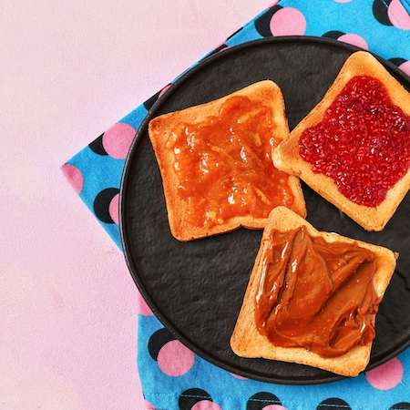

Toast with Toppings

Nostalgic Breakfast from those Important Teen Years
Fresh or frozen sliced bread, toasted, with a generous layer of butter
and spread of your choice
You'll want this breakfast all week!
Ingredients
- Sliced bread
- Butter
- Marmite, Vegemite, Jam, Nut butter, Biscoff, Honey, Avocado if you can afford it
Method
- Procure all required ingredients before starting
- Check toaster is on at the wall
- Put individual slice of bread in toaster and dont forget to push it down to toast.
- Once toast has popped up, slather on butter on each slice. Wipe excess butter back in rim of container
- Using the same knife, choose from spread options available (not all at once) and spread an even
layer over the butter, being sure to reach right into the corners
Pro tip: Cut into squares, triangles, rectangles or diamonds for that trip down memory lane
Back to main menu